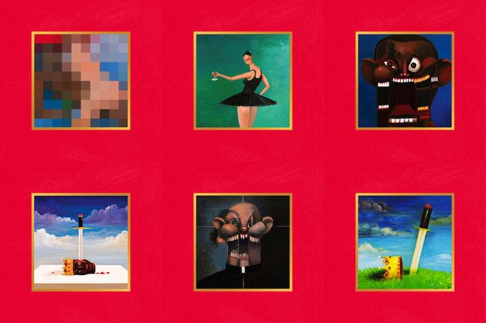
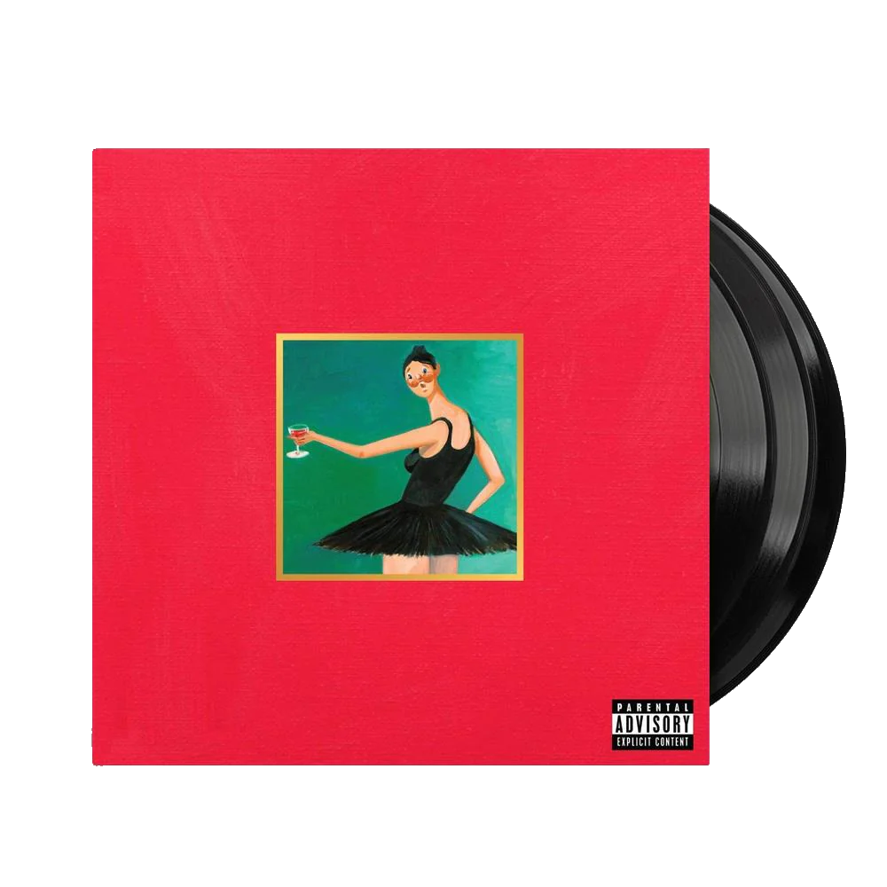

Kanye West, an American rapper and producer, released his fifth studio album, "My Beautiful Dark Twisted Dream," to rave reviews. The album, which was released in 2010, was a change from West's earlier work and featured a wide range of musical genres and subjects, from social problems to personal challenges. The album garnered a lot of positive reviews from critics, many of whom hailed it as a masterpiece and one of the greatest of the decade. It had a big impact on pop culture since it changed the course of Kanye West's career and solidified his standing as one of the most forward-thinking and influential musicians of his time. The album has now become a cherished classic among music lovers and critics. It also gave birth to several popular singles, including "Power" and "Runaway."
 "Records n tha" is a Dublin-based music record shop founded by Dylan Keogh and Reece O'Brien in the heart of the city. The store was born out of their shared passion for music and their desire to create a space that celebrates physical music in an age of digital streaming. The shop offers a carefully curated selection of vinyl records and CDs, with a focus on underground and independent artists from Ireland and around the world. The name "Records n tha" reflects the shop's playful, irreverent spirit and commitment to bringing fresh, eclectic sounds to Dublin's music scene.